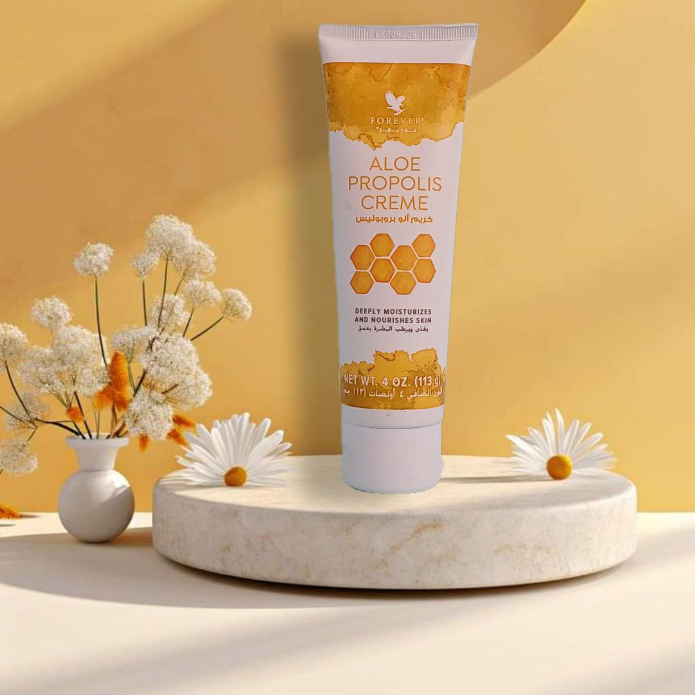
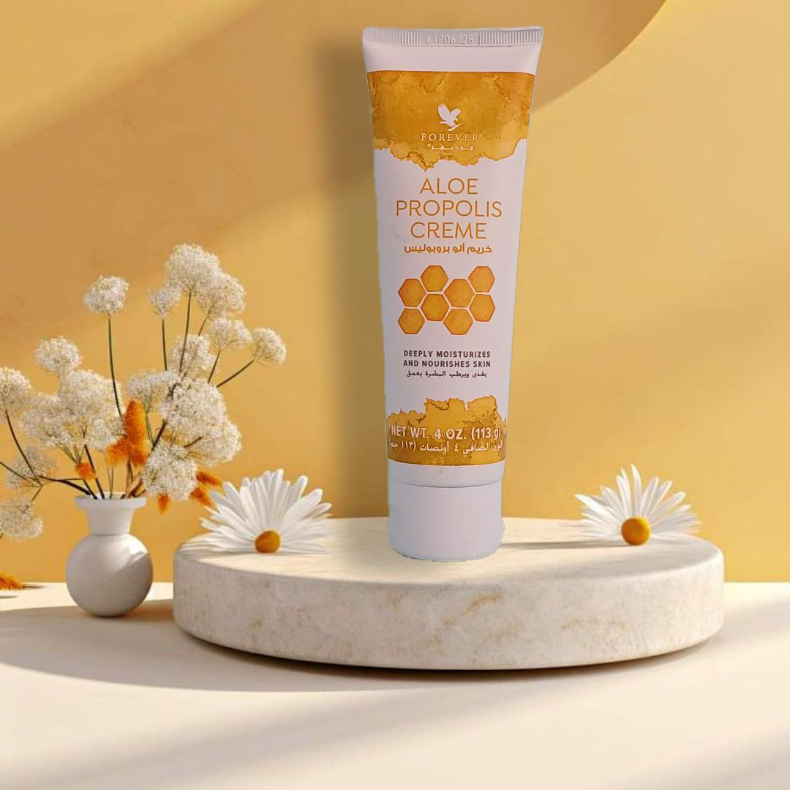
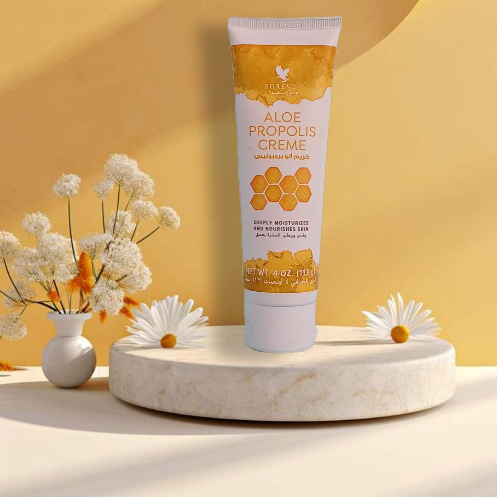
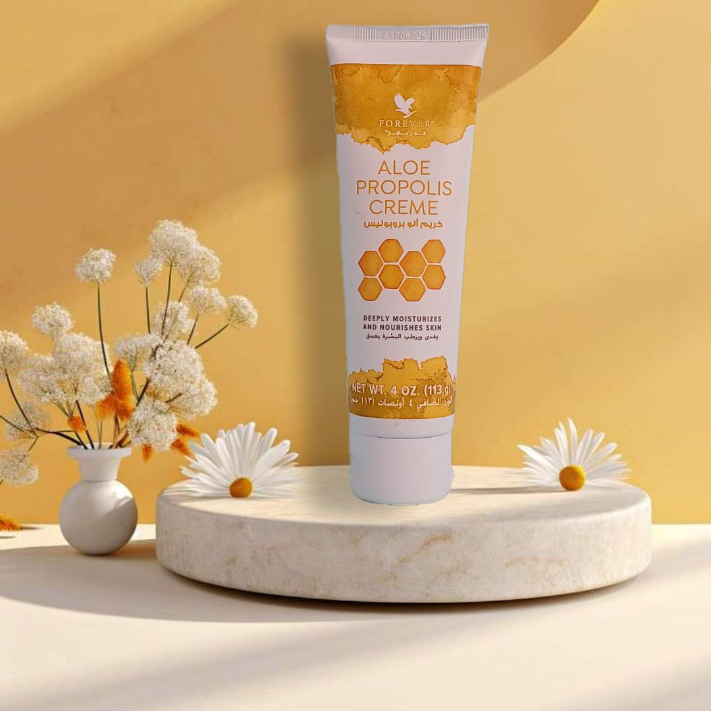

يجمع الألو بروبوليس كريم بين الألوفيرا و البروبوليس (صمغ النحل). تعمل الفيتامينات "أ" و "اي" و "سي" على تغذية وترطيب البشرة بينما يساعد البروبوليس على تجديد شباب البشرة للحصول على مظهر أكثر نعومة.
يجمع هذا الكريم المغذي بين أهم المكونات لدينا، وهما: الألوة فيرا و البروبوليس (صمغ النحل). يساعد هذان العنصران الأساسيان معًا بشرتك في الحفاظ على لونها وملمسها الجميل.
البروبوليس عبارة عن مادة شديدة الصمغية يستخدمها النحل لتحصين و حماية خلاياها.اتضح أنه يحتوي أيضًا على خصائص تخلق حاجزًا طبيعيًا على بشرتك، وتحبس فوائد العناية بالبشرة الطبيعية للصبار.
يعمل الصبار مع الفيتامينات "أ"و "اي" و "سي" على تغذية البشرة وترطيبها بينما يساعد البروبوليس على تجديد شباب البشرة للحصول على مظهر وملمس ناعم. يعزز ألو بروبوليس كريم أيضًا قوة الألوة المهدئة مع إضافة الى البابونج.
نستخدم هلام الصبار النقي من مزارعنا الخاصة. يتم حصاد الصبار يدويًا وتقطيعه في شرائح لتجنب التلف ولضمان جودة عالية من الألوة فيرا في منتجاتنا.